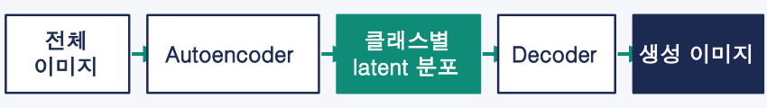
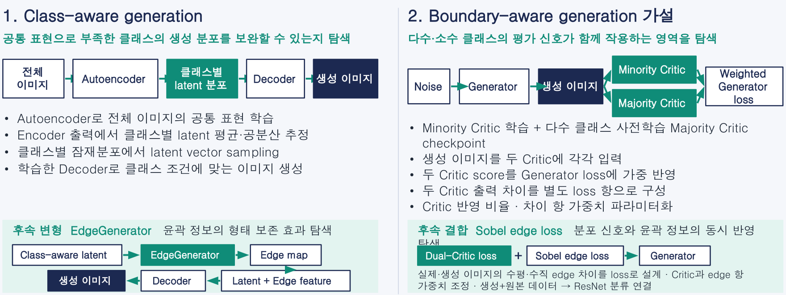

불균형 이미지 데이터의 GAN 기반 증강
소수 클래스의 개수를 맞추는 것을 넘어, 어떤 생성 샘플이 분류에 실제로 유용한지 탐색했습니다. 공통 표현을 활용하는 클래스별 생성과 두 Critic 신호를 결합하는 생성 방법을 구현하고, 이미지 품질과 분류 유용성이 일치하지 않는 한계를 검토했습니다.
- 구현: BAGAN·EdgeGenerator / Dual-Critic WGAN-GP·Sobel edge loss
- 검토: 생성 현실성·다양성과 분류에 유용한 경계 정보의 차이


문제와 맥락
불균형 분류에서는 소수 클래스의 개수를 늘리는 것만으로 분류에 필요한 정보를 충분히 보완하기 어렵습니다. 다수 클래스가 생성 학습 신호를 지배하고, 관측값이 부족한 소수 클래스의 분포 추정과 생성 다양성이 불안정해질 수 있습니다. 시각적으로 그럴듯한 이미지가 downstream 분류에도 유용한지 확인하는 것이 연구 질문이었습니다.
2019년 대학원 팀 프로젝트에서는 Vanilla GAN·CGAN·ACGAN을 비교했습니다. MNIST와 CIFAR-10을 불균형하게 구성하고, 생성 이미지를 추가한 뒤 LeNet·ResNet으로 분류를 평가했습니다. 2023년 개인 후속 연구에서는 클래스별 생성 분포를 보완하는 접근과 분류 경계에 유용한 샘플을 생성하려는 가설을 별도로 탐색했습니다.
수행 역할
2023년 개인 후속 연구에서 PyTorch 기반 모델 구조, 손실함수, 학습 루프, 이미지 생성 및 downstream 분류 파이프라인을 구현했습니다. Critic 반영 비율과 손실 항 가중치를 조정해 비교할 수 있도록 실험을 구성했습니다. 2019년 팀 프로젝트의 세부 개인 분담은 별도로 명시하지 않습니다.
접근 방법
공통 표현과 클래스별 잠재분포: BAGAN 계열
Autoencoder로 전체 이미지의 공통 표현을 학습하고, Encoder 출력에서 클래스별 잠재벡터의 평균과 공분산을 추정했습니다. 클래스별 분포에서 잠재벡터를 샘플링한 뒤 학습한 Decoder로 이미지를 생성했습니다. BAGAN·Convolutional BAGAN을 탐색하고, 후속 변형에서는 EdgeGenerator가 만든 윤곽 정보를 Decoder feature에 결합했습니다.
두 Critic의 신호를 결합: Dual-Critic WGAN-GP
소수 클래스 Critic과 다수 클래스에서 사전 학습한 Majority Critic checkpoint를 사용했습니다. 생성 이미지를 두 Critic에 입력하고, 각 점수를 Generator loss에 가중 반영했습니다. 두 Critic 출력의 차이도 별도 손실 항으로 구성해, 클래스 중심에서 벗어난 생성 방향을 탐색했습니다. 이는 유용한 경계 샘플을 만들 수 있다는 가설이며, 경계 근접성을 검증한 결과로 해석하지 않습니다.
윤곽 정보와 분류 평가 연결
실제·생성 이미지의 수평·수직 윤곽 차이를 Sobel edge loss로 설계하고 Dual-Critic loss와 결합했습니다. Critic과 edge 항의 가중치를 조정하는 구조를 구현하고, 생성 데이터와 원본 데이터를 ResNet 분류로 연결했습니다. 공개 실험 기록에서는 정확도 외에 F1·G-mean 등 불균형 분류 지표도 사용합니다.
구현한 접근 전체 도식

적용 범위
구현 과정에서 확인한 한계
각 Critic은 해당 클래스의 real/fake 정도를 평가하며, 두 클래스를 구분하는 분류기가 아닙니다. 두 점수가 비슷하거나 모두 높은 생성물이 유용한 hard sample이라는 보장은 없습니다. 클래스 공통 특징, Critic 오류, 모호한 클래스 혼합, 생성 artifact를 구분할 판단 기준도 부족했습니다. Sobel edge 역시 윤곽을 표현할 뿐, 분류기의 의미적 특징을 직접 나타내지는 않습니다.
동일 조건의 정량 비교와 생성 현실성·다양성·경계 근접성의 동시 평가는 완료하지 않았습니다. 보존 코드만으로 edge 항의 학습 효과나 최종 성능을 확정하지 않으며, 2019년과 2023년 실험을 동일 조건의 성능 비교로 다루지 않습니다.
다시 정의한 연구 방향
별도 분류기의 feature space에서 클래스 구분 특징과 decision boundary까지의 거리를 분석하고, 생성 현실성과 경계 근접성을 함께 평가하는 방향으로 문제를 재정의했습니다. Confidence filtering·soft label과 생성 데이터 추가 전후의 분류 성능 비교도 후속 검토 항목입니다. 이 항목들은 완료된 결과가 아닌 향후 연구 방향입니다.